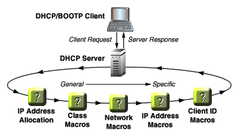

Overview
Solaris DHCP
Getting Help
About Macros and Options
In a DHCP environment, macros are containers for option values that are passed as configuration parameters from the DHCP server to the DHCP client. For example, you might define a macro that contains options specifying a DNS server and print server to be used by all clients using IP addresses owned by a particular DHCP server.Options specify the format in which option values are defined in the DHCP server's dhcptab database (in which all DHCP options and macros are stored). For example, option category, data type, vendor, and granularity all determine the shape of the options contained in your macros. Creating and modifying options is described further in the help pages for Create Option and Modify Option.
The SolarisTM operating environment provides extremely robust and flexible DHCP macro and option capabilities. Specifically, you can define sets of macros and options that provide client configuration parameters based on the following categories.
| Category | Description |
|---|---|
| Client Class | An ASCII string representing the client machine type and/or operating system; for example, SUNW.Javastation. This type of macro makes it possible to define configuration parameters that are passed to all clients of the same class. |
| Network | A numeric string in dotted IP format indicating the client's network; for example 10.0.0.0. This type of macro makes it possible to define configuration parameters that are passed to all clients on the same network. |
| IP Address | A client or server DNS name, or a numeric string in dotted IP format associated with the client or a particular server; for example bigfiles or 125.53.224.45. This type of macro can be used to pass configuration parameters to clients using a particular IP address. More commonly, however, it is used to pass server-specific parameters to all clients using IP addresses that are owned by a particular server. |
| Client ID | An ASCII string representing some unique identifier for the client; for example, an Ethernet or MAC ID. This type of macro makes it possible to pass client-specific configuration parameters. |
Using Macros and Options
You want to remember three things when defining DHCP macros and options:
- Macro categories -- and hence the order in which
the macros are processed -- are determined entirely by macro name.
Therefore, be sure to make your macro names the same as the
names of the resources or devices you want the macros to
control. For example:
To Control Name Your Macro Client Class Same name as the DHCP client's client class; for example, name your macro SUNW.Javastation. Network Same as the IP address of the network through which the client is connecting; for example, name your macro 10.0.0.0. IP Address Same as the DHCP client or DHCP server DNS name or IP address; for example, name your macro bigfiles or 125.53.224.45. Client ID Hexadecimal representation of the Ethernet address, MAC, or other unique client identifier; for example, name your macro 010800201112B7. - Order is important. The order in which
macros and options are processed is significant, with macros and options
processed last, superseding those that came before them. Macros and
options are processed in the order shown in the illustration.

As shown in the illustration, macro processing progresses from the general to the specific.
- Client Class macros are processed first.
- Network macros are processed second, superseding any competing settings in Client Class macros.
- IP Address macros are processed third, superseding any competing settings in previous macros.
- Client ID macros are processed last, superseding any competing settings in all previous macros.
- Macros can be nested. Regardless of the category in which you create your macros, you can nest macros so that, for example, a client class macro could be called from an IP Address macro.